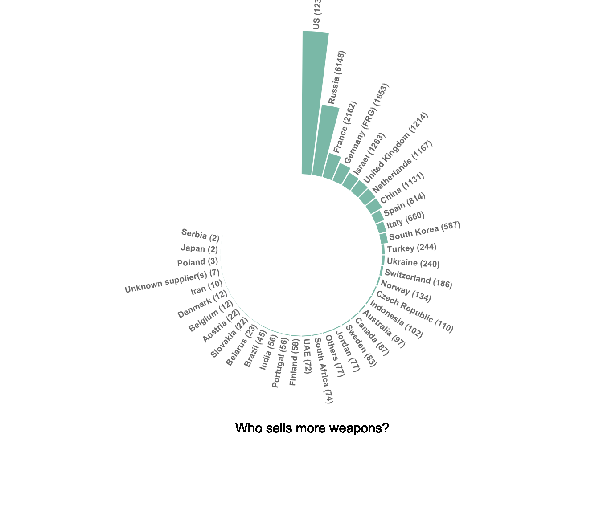
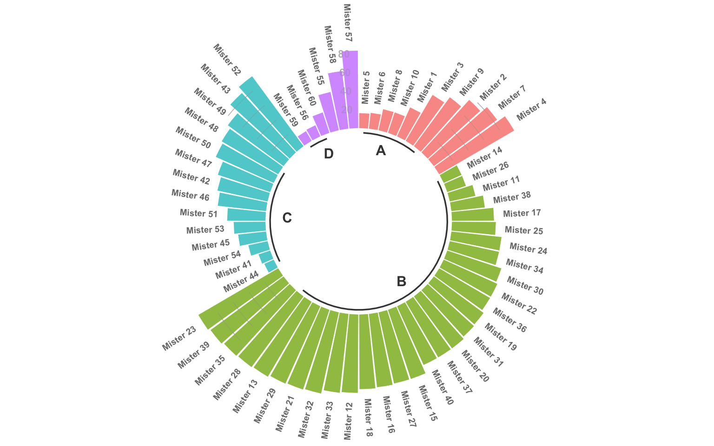
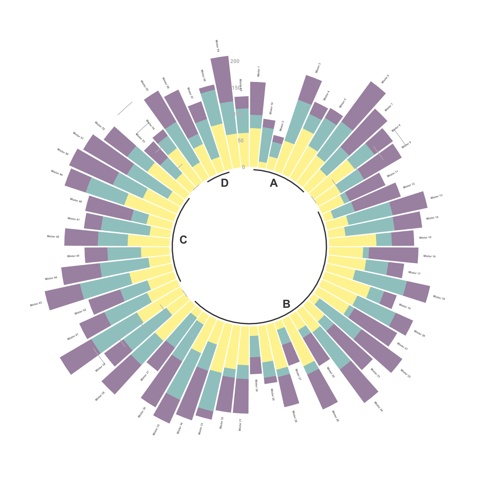
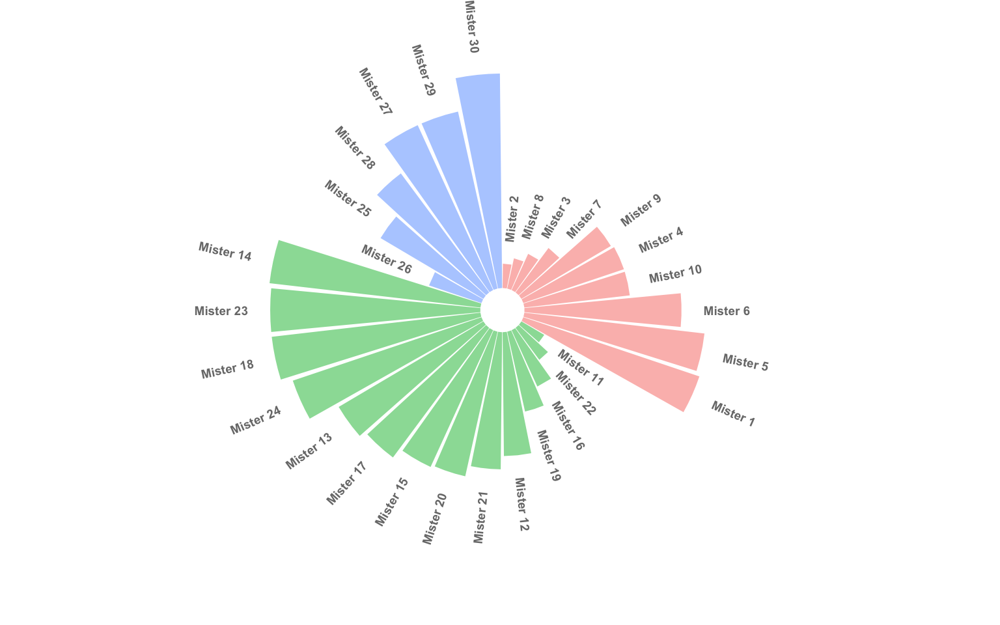

Circular Barplot
definition - mistake - related - code
A circular barplot is a barplot, with each
bar displayed along a circle instead of a line. Thus, it is advised to
have a good understanding of how barplot works before making it
circular. Circular bar chart is very ‘eye catching’ and allows a better
use of the space than a long usual barplot.
Here is an example showing the quantity of weapons exported by the top 20 largest exporters in 2017 (more info here):
# Libraries
library(tidyverse)
library(hrbrthemes)
library(kableExtra)
options(knitr.table.format = "html")
library(viridis)
# Load dataset from github
data <- read.table("https://raw.githubusercontent.com/holtzy/data_to_viz/master/Example_dataset/7_OneCatOneNum.csv", header=TRUE, sep=",")
# Order data
tmp <- data %>%
filter(!is.na(Value)) %>%
arrange(desc(Value)) %>%
mutate(Country=factor(Country, Country))
# Set a number of 'empty bar'
empty_bar=10
# Add lines to the initial tmpset
to_add = matrix(NA, empty_bar, ncol(tmp))
colnames(to_add) = colnames(tmp)
tmp=rbind(tmp, to_add)
tmp$id=seq(1, nrow(tmp))
# Get the name and the y position of each label
label_tmp=tmp
number_of_bar=nrow(label_tmp)
angle= 90 - 360 * (label_tmp$id-0.5) /number_of_bar # I substract 0.5 because the letter must have the angle of the center of the bars. Not extreme right(1) or extreme left (0)
label_tmp$hjust<-ifelse( angle < -90, 1, 0)
label_tmp$angle<-ifelse(angle < -90, angle+180, angle)
label_tmp$Country <- gsub("United States", "US", label_tmp$Country)
label_tmp$Country <- paste(label_tmp$Country, " (", label_tmp$Value,")", sep="")
# Make the plot
ggplot(tmp, aes(x=as.factor(id), y=Value)) + # Note that id is a factor. If x is numeric, there is some space between the first bar
geom_bar(stat="identity", fill=alpha("#69b3a2", 0.8)) +
ylim(-7000,13000) +
theme_minimal() +
theme(
axis.text = element_blank(),
axis.title = element_blank(),
panel.grid = element_blank(),
plot.margin = unit(rep(-1,4), "cm")
) +
coord_polar(start = 0) +
geom_text(data=label_tmp, aes(x=id, y=Value+200, label=Country ), color="black", fontface="bold",alpha=0.6, size=2.5, angle= label_tmp$angle, hjust=label_tmp$hjust, inherit.aes = FALSE ) +
geom_text( aes(x=24, y=8000, label="Who sells more weapons?"), color="black", inherit.aes = FALSE)
Note:
Circular barplot is really eye catching but makes it more difficult to read the differences between each bar size. Thus, circular barcharts make sense only if you have a huge number of bar to display, and if an obvious pattern pops out.
In my opinion, circular barplot gets even more interesting with a grouping variable. In the following example that uses dummy data, it is easy to compare groups and entities into each group.
# Create dataset
data=data.frame(
individual=paste( "Mister ", seq(1,60), sep=""),
group=c( rep('A', 10), rep('B', 30), rep('C', 14), rep('D', 6)) ,
value=sample( seq(10,100), 60, replace=T)
)
data = data %>% arrange(group, value)
# Set a number of 'empty bar' to add at the end of each group
empty_bar=3
to_add = data.frame( matrix(NA, empty_bar*nlevels(data$group), ncol(data)) )
colnames(to_add) = colnames(data)
to_add$group=rep(levels(data$group), each=empty_bar)
data=rbind(data, to_add)
data=data %>% arrange(group)
data$id=seq(1, nrow(data))
# Get the name and the y position of each label
label_data=data
number_of_bar=nrow(label_data)
angle= 90 - 360 * (label_data$id-0.5) /number_of_bar # I substract 0.5 because the letter must have the angle of the center of the bars. Not extreme right(1) or extreme left (0)
label_data$hjust<-ifelse( angle < -90, 1, 0)
label_data$angle<-ifelse(angle < -90, angle+180, angle)
# prepare a data frame for base lines
base_data=data %>%
group_by(group) %>%
summarize(start=min(id), end=max(id) - empty_bar) %>%
rowwise() %>%
mutate(title=mean(c(start, end)))
# prepare a data frame for grid (scales)
grid_data = base_data
grid_data$end = grid_data$end[ c( nrow(grid_data), 1:nrow(grid_data)-1)] + 1
grid_data$start = grid_data$start - 1
grid_data=grid_data[-1,]
# Make the plot
p = ggplot(data, aes(x=as.factor(id), y=value, fill=group)) + # Note that id is a factor. If x is numeric, there is some space between the first bar
geom_bar(aes(x=as.factor(id), y=value, fill=group), stat="identity", alpha=0.5) +
# Add a val=100/75/50/25 lines. I do it at the beginning to make sur barplots are OVER it.
geom_segment(data=grid_data, aes(x = end, y = 80, xend = start, yend = 80), colour = "grey", alpha=1, size=0.3 , inherit.aes = FALSE ) +
geom_segment(data=grid_data, aes(x = end, y = 60, xend = start, yend = 60), colour = "grey", alpha=1, size=0.3 , inherit.aes = FALSE ) +
geom_segment(data=grid_data, aes(x = end, y = 40, xend = start, yend = 40), colour = "grey", alpha=1, size=0.3 , inherit.aes = FALSE ) +
geom_segment(data=grid_data, aes(x = end, y = 20, xend = start, yend = 20), colour = "grey", alpha=1, size=0.3 , inherit.aes = FALSE ) +
# Add text showing the value of each 100/75/50/25 lines
annotate("text", x = rep(max(data$id),4), y = c(20, 40, 60, 80), label = c("20", "40", "60", "80") , color="grey", size=3 , angle=0, fontface="bold", hjust=1) +
geom_bar(aes(x=as.factor(id), y=value, fill=group), stat="identity", alpha=0.5) +
ylim(-100,120) +
theme_minimal() +
theme(
legend.position = "none",
axis.text = element_blank(),
axis.title = element_blank(),
panel.grid = element_blank(),
plot.margin = unit(rep(-1,4), "cm")
) +
coord_polar() +
geom_text(data=label_data, aes(x=id, y=value+10, label=individual, hjust=hjust), color="black", fontface="bold",alpha=0.6, size=2.5, angle= label_data$angle, inherit.aes = FALSE ) +
# Add base line information
geom_segment(data=base_data, aes(x = start, y = -5, xend = end, yend = -5), colour = "black", alpha=0.8, size=0.6 , inherit.aes = FALSE ) +
geom_text(data=base_data, aes(x = title, y = -18, label=group), hjust=c(1,1,0,0), colour = "black", alpha=0.8, size=4, fontface="bold", inherit.aes = FALSE)
p
Most of the variations presented for the barplot are
obviously available for the circular barplot. For instance, you can
group your variable and stack the group to get a
stacked circular barplot:
# Create dataset
data=data.frame(
individual=paste( "Mister ", seq(1,60), sep=""),
group=c( rep('A', 10), rep('B', 30), rep('C', 14), rep('D', 6)) ,
value1=sample( seq(10,100), 60, replace=T),
value2=sample( seq(10,100), 60, replace=T),
value3=sample( seq(10,100), 60, replace=T)
)
# Transform data in a tidy format (long format)
data = data %>% gather(key = "observation", value="value", -c(1,2))
# Set a number of 'empty bar' to add at the end of each group
empty_bar=2
nObsType=nlevels(as.factor(data$observation))
to_add = data.frame( matrix(NA, empty_bar*nlevels(data$group)*nObsType, ncol(data)) )
colnames(to_add) = colnames(data)
to_add$group=rep(levels(data$group), each=empty_bar*nObsType )
data=rbind(data, to_add)
data=data %>% arrange(group, individual)
data$id=rep( seq(1, nrow(data)/nObsType) , each=nObsType)
# Get the name and the y position of each label
label_data= data %>% group_by(id, individual) %>% summarize(tot=sum(value))
number_of_bar=nrow(label_data)
angle= 90 - 360 * (label_data$id-0.5) /number_of_bar # I substract 0.5 because the letter must have the angle of the center of the bars. Not extreme right(1) or extreme left (0)
label_data$hjust<-ifelse( angle < -90, 1, 0)
label_data$angle<-ifelse(angle < -90, angle+180, angle)
# prepare a data frame for base lines
base_data=data %>%
group_by(group) %>%
summarize(start=min(id), end=max(id) - empty_bar) %>%
rowwise() %>%
mutate(title=mean(c(start, end)))
# prepare a data frame for grid (scales)
grid_data = base_data
grid_data$end = grid_data$end[ c( nrow(grid_data), 1:nrow(grid_data)-1)] + 1
grid_data$start = grid_data$start - 1
grid_data=grid_data[-1,]
# Make the plot
p = ggplot(data) +
# Add the stacked bar
geom_bar(aes(x=as.factor(id), y=value, fill=observation), stat="identity", alpha=0.5) +
scale_fill_viridis(discrete=TRUE) +
# Add a val=100/75/50/25 lines. I do it at the beginning to make sur barplots are OVER it.
geom_segment(data=grid_data, aes(x = end, y = 0, xend = start, yend = 0), colour = "grey", alpha=1, size=0.3 , inherit.aes = FALSE ) +
geom_segment(data=grid_data, aes(x = end, y = 50, xend = start, yend = 50), colour = "grey", alpha=1, size=0.3 , inherit.aes = FALSE ) +
geom_segment(data=grid_data, aes(x = end, y = 100, xend = start, yend = 100), colour = "grey", alpha=1, size=0.3 , inherit.aes = FALSE ) +
geom_segment(data=grid_data, aes(x = end, y = 150, xend = start, yend = 150), colour = "grey", alpha=1, size=0.3 , inherit.aes = FALSE ) +
geom_segment(data=grid_data, aes(x = end, y = 200, xend = start, yend = 200), colour = "grey", alpha=1, size=0.3 , inherit.aes = FALSE ) +
# Add text showing the value of each 100/75/50/25 lines
annotate("text", x = rep(max(data$id),5), y = c(0, 50, 100, 150, 200), label = c("0", "50", "100", "150", "200") , color="grey", size=2 , angle=0, fontface="bold", hjust=1) +
ylim(-150,max(label_data$tot, na.rm=T)) +
theme_minimal() +
theme(
legend.position = "none",
axis.text = element_blank(),
axis.title = element_blank(),
panel.grid = element_blank(),
plot.margin = unit(rep(-1,4), "cm")
) +
coord_polar() +
# Add labels on top of each bar
geom_text(data=label_data, aes(x=id, y=tot+10, label=individual, hjust=hjust), color="black", fontface="bold",alpha=0.6, size=1, angle= label_data$angle, inherit.aes = FALSE ) +
# Add base line information
geom_segment(data=base_data, aes(x = start, y = -5, xend = end, yend = -5), colour = "black", alpha=0.8, size=0.6 , inherit.aes = FALSE ) +
geom_text(data=base_data, aes(x = title, y = -18, label=group), hjust=c(1,1,0,0), colour = "black", alpha=0.8, size=4, fontface="bold", inherit.aes = FALSE)
p
# Create dataset
data=data.frame(
individual=paste( "Mister ", seq(1,30), sep=""),
group=c( rep('A', 10), rep('C', 14), rep('D', 6)) ,
value=sample( seq(10,100), 30, replace=T)
)
data = data %>% arrange(group, value)
# Set a number of 'empty bar' to add at the end of each group
empty_bar=1
to_add = data.frame( matrix(NA, empty_bar*nlevels(data$group), ncol(data)) )
colnames(to_add) = colnames(data)
to_add$group=rep(levels(data$group), each=empty_bar)
data=rbind(data, to_add)
data=data %>% arrange(group)
data$id=seq(1, nrow(data))
# Get the name and the y position of each label
label_data=data
number_of_bar=nrow(label_data)
angle= 90 - 360 * (label_data$id-0.5) /number_of_bar # I substract 0.5 because the letter must have the angle of the center of the bars. Not extreme right(1) or extreme left (0)
label_data$hjust<-ifelse( angle < -90, 1, 0)
label_data$angle<-ifelse(angle < -90, angle+180, angle)
# Make the plot
p = ggplot(data, aes(x=as.factor(id), y=value, fill=group)) + # Note that id is a factor. If x is numeric, there is some space between the first bar
geom_bar(aes(x=as.factor(id), y=value, fill=group), stat="identity", alpha=0.5) +
ylim(-10,120) +
theme_minimal() +
theme(
legend.position = "none",
axis.text = element_blank(),
axis.title = element_blank(),
panel.grid = element_blank(),
plot.margin = unit(rep(-1,4), "cm")
) +
coord_polar() +
geom_text(data=label_data, aes(x=id, y=value+10, label=individual, hjust=hjust), color="black", fontface="bold",alpha=0.6, size=2.5, angle= label_data$angle, inherit.aes = FALSE )
p
Data To Viz is a comprehensive classification of chart types organized by data input format. Get a high-resolution version of our decision tree delivered to your inbox now!

A work by Yan Holtz for data-to-viz.com